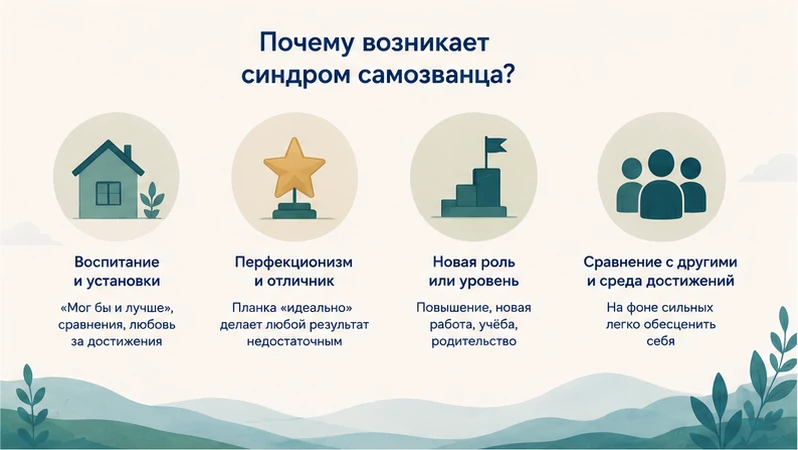
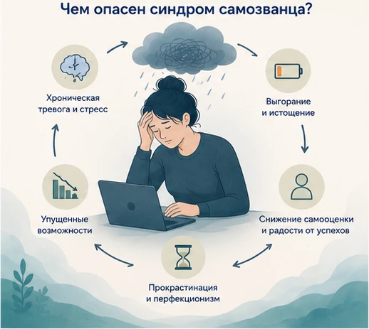
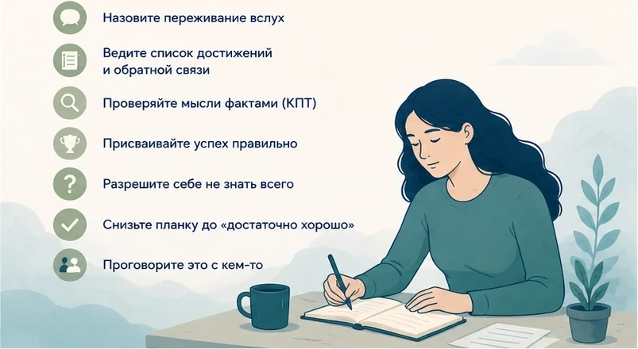
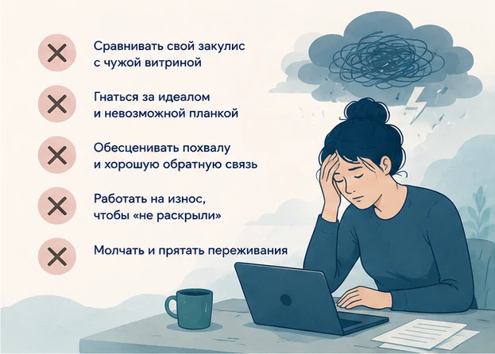
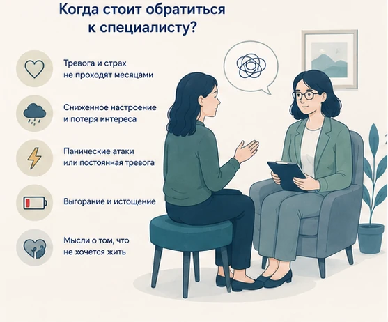

Главная → Блог → Синдром самозванца
Синдром самозванца: 7 способов перестать чувствовать себя обманщиком
Обновлено: 03.07.2026 · 9 минут чтения
Синдром самозванца — это устойчивое ощущение, что вы «недостаточно хороши» и добились всего случайно, а окружающие вот-вот поймут, что вы обманщик. При этом объективно человек часто успешен и компетентен — просто не может присвоить себе свои достижения. Хорошая новость: это не приговор и не черта характера. Ощущение самозванца можно заметно ослабить — если научиться опираться на факты, а не на внутреннего критика.
- синдром самозванца — не болезнь и не диагноз, а устойчивое переживание;
- хотя бы раз в жизни его испытывают около 70% людей;
- чаще возникает у успешных, способных и растущих людей, а не у слабых;
- сам по себе обычно не проходит, но хорошо поддаётся коррекции;
- помогают опора на факты, снижение планки, разговор и техники КПТ.
- Что такое синдром самозванца и почему он возникает
- Как проявляется синдром самозванца: признаки и симптомы
- Быстрый тест: есть ли у вас синдром самозванца
- 5 типов самозванца
- Чем опасен синдром самозванца
- 5 мифов о синдроме самозванца
- 7 способов перестать чувствовать себя самозванцем
- Как поддержать себя в долгую
- Какие ошибки усиливают синдром самозванца
- Когда обратиться к специалисту
- Частые вопросы
Что такое синдром самозванца и почему он возникает
Синдром самозванца (в науке — «феномен самозванца») впервые описали в 1978 году психологи Полин Клэнс и Сюзанна Аймс. Суть в том, что человек не способен внутренне принять свои успехи: любое достижение он объясняет удачей, случайностью, помощью других или тем, что «всех обманул», — и живёт со страхом, что рано или поздно его «раскроют». Это не про скромность и не про реальный обман, а про разрыв между объективными результатами и внутренней самооценкой.
Явление это очень распространённое: по разным оценкам, чувство самозванца хотя бы раз в жизни переживают около 70% людей, а в отдельных исследованиях среди студентов и специалистов эти переживания встречаются у четверти мужчин и почти половины женщин. Так что «мне просто повезло, а на самом деле я ничего не умею» — не ваша уникальная проблема, а знакомое очень многим состояние.
Откуда оно берётся? Причин обычно несколько, и они складываются:
- Воспитание и ранние послания. «Мог бы и лучше», сравнения с другими, любовь «за пятёрки» — так формируется установка, что ценность нужно постоянно доказывать;
- перфекционизм и синдром отличника — планка «идеально» превращает любой нормальный результат в «недостаточно хороший»;
- новая роль или уровень — повышение, новая работа, учёба, родительство: в незнакомой ситуации ощущение «я тут случайно» усиливается;
- среда высоких достижений — вокруг сильные коллеги, и на их фоне легко обесценить себя;
- стереотипы и «непохожесть» — когда ты в меньшинстве (по полу, возрасту, бэкграунду), проще решить, что «не дотягиваешь».

Встречается это состояние у самых разных людей: и у женщин, и у мужчин, у студентов и начинающих специалистов, у опытных руководителей, у айтишников и программистов (там даже есть полушутливое «я гуглю — значит, я не настоящий разработчик»), у творческих людей и даже в отношениях — когда кажется, что партнёр «слишком хорош» и рано или поздно разочаруется. Меняются декорации, а механизм один и тот же.
Важно понять: синдром самозванца обычно поражает как раз способных, ответственных и растущих людей. Он «липнет» не к слабым, а к тем, кто ставит высокую планку и всерьёз относится к делу.
Люди с феноменом самозванца убеждены, что они не настолько способны, как о них думают другие, и живут в постоянном страхе, что их «разоблачат», — несмотря на объективные доказательства обратного.
Как проявляется синдром самозванца: признаки и симптомы
Разовое «а справлюсь ли я?» — это нормально. О синдроме самозванца говорят, когда такое самоощущение становится фоновым и повторяется от задачи к задаче. Присмотритесь к симптомам, если узнаёте несколько признаков:
- вы объясняете успехи удачей, случайностью или помощью других, но не своими способностями;
- живёте со страхом «разоблачения» — что вот-вот все поймут, что вы не так хороши;
- обесцениваете достижения: «это же элементарно», «любой бы справился»;
- болезненно реагируете на критику и ошибки, воспринимаете их как подтверждение своей «несостоятельности»;
- похвалу принимаете с трудом — кажется, что вас перехвалили или вы ввели человека в заблуждение;
- перерабатываете и перепроверяете, чтобы «не попасться», — отсюда постоянная тревога и усталость;
- откладываете новые возможности («я ещё не готов»), хотя по факту готовы.
Если это про вас — приёмы ниже помогут ослабить хватку внутреннего критика. Проблема не в том, что вы чего-то не умеете, а в том, что мозг систематически не даёт вам присвоить то, что вы уже умеете.
Отличить синдром самозванца от здоровой неуверенности помогает простой ориентир: здоровое сомнение говорит о задаче («мне нужно время, я разберусь»), а голос самозванца говорит о вас целиком («я обманщик, меня раскроют»).
| Голос самозванца | Здоровая неуверенность |
|---|---|
| «Я ничего не умею» | «Мне нужно время, чтобы разобраться» |
| «Меня скоро раскроют» | «Я учусь, и это нормально» |
| «Мне просто повезло» | «Я хорошо подготовился» |
| «Ошибка = я несостоятелен» | «Ошибка = я узнал, что поправить» |
Быстрый тест: есть ли у вас синдром самозванца
Это не диагностика, а способ быстро свериться с собой. Ответьте «да» или «нет» на пять вопросов:
- Свои успехи вы чаще объясняете удачей или помощью других, чем своими способностями?
- Вас не отпускает страх, что однажды все поймут, что вы «не настолько хороши»?
- Похвалу и хорошие отзывы вам трудно принять — кажется, что вас переоценили?
- Даже заметные достижения быстро обесцениваются, а планка тут же поднимается выше?
- Вы перерабатываете и перепроверяете, лишь бы «не попасться» на некомпетентности?
Три и более «да» — уверенный повод присмотреться к теме: скорее всего, внутренний самозванец влияет на вашу жизнь сильнее, чем хотелось бы. Хорошая новость в том, что с этим можно работать — как именно, разберём ниже.
5 типов самозванца
Психолог Валери Янг описала пять типичных «сценариев» синдрома самозванца. Часто в человеке сочетаются сразу несколько, но обычно один ведущий. Узнать свой тип полезно: так понятнее, какая именно установка запускает самообесценивание.
| Тип | Скрытое убеждение |
|---|---|
| Перфекционист | «Если результат не идеален на 100%, значит, я провалился». Малейший недочёт обесценивает всю работу. |
| Эксперт | «Я не имею права браться, пока не знаю всё». Бесконечно учится и боится, что «спросят и я не отвечу». |
| Прирождённый гений | «Настоящий талант даётся легко». Если что-то потребовало усилий — «значит, я недостаточно способен». |
| Индивидуалист (солист) | «Просить помощь — признак слабости». Считает, что засчитывается только то, что сделано в одиночку. |
| Супергерой | «Я должен всё успевать и везде быть лучшим». Тянет всё на себе, перерабатывает и выгорает. |
Общий корень у всех пяти один — нереалистичная планка «достаточного». Заметить свой тип уже полдела: дальше работа идёт не «со всем сразу», а с конкретной установкой, которую можно оспорить.
Чем опасен синдром самозванца
Кажется, что это «просто неуверенность». Но в долгую постоянное самообесценивание дорого обходится — и психике, и карьере.

Коварство в том, что он самоподдерживается. Схема повторяется по кругу: сомнение («вдруг не справлюсь») → переработка и перепроверки → успех → обесценивание («просто повезло, я тут ни при чём») → новая тревога перед следующей задачей. Каждый успех не укрепляет уверенность, а лишь поднимает планку — и запускает круг заново. К чему это приводит:
- Хроническая тревога и стресс. Жизнь в режиме «вот-вот раскроют» держит нервную систему в напряжении — растёт фоновая тревога, портится сон.
- Выгорание. Чтобы «не попасться», человек перерабатывает и перепроверяет — и незаметно доходит до эмоционального выгорания. Исследования подтверждают связь синдрома самозванца с выгоранием, тревогой и депрессией.
- Упущенные возможности. Страх «не соответствовать» заставляет отказываться от повышений, проектов, выступлений — и тормозит карьеру.
- Прокрастинация и перфекционизм. Одни бесконечно оттягивают старт «пока не готов», другие вылизывают детали до изнеможения.
- Меньше радости от успехов. Даже большие достижения не приносят удовлетворения — планка тут же поднимается выше.
Именно поэтому синдром самозванца стоит не «терпеть», а разбирать: он редко проходит сам и часто тянет за собой стресс, тревогу и выгорание.
5 мифов о синдроме самозванца
Вокруг темы много заблуждений, из-за которых люди не берутся с ней работать. Разберём главные.
- Миф 1. Это бывает только у новичков. Наоборот: чаще всего синдром самозванца встречается у опытных и успешных людей — чем выше достижения, тем сильнее страх не соответствовать.
- Миф 2. Это просто скромность. Нет. Скромность не мучает и не мешает жить, а синдром самозванца держит в постоянной тревоге и заставляет отказываться от возможностей.
- Миф 3. Чтобы избавиться, нужно добиться большего. Успех не лечит — планка просто поднимается выше, и новое достижение снова обесценивается. Дело не в результатах, а в способе их присваивать.
- Миф 4. Это «женская» проблема. Синдром самозванца встречается и у мужчин, просто они реже о нём говорят. От пола зависит форма, а не сам механизм.
- Миф 5. Это навсегда, такой уж характер. Это не черта личности, а выученный способ мышления — а значит, его можно заметить и переписать техниками самопомощи и в работе с психологом.
7 способов перестать чувствовать себя самозванцем
С синдромом самозванца работают не «повышением уверенности» на словах, а конкретными действиями, которые возвращают опору на факты. Не обязательно всё сразу — выберите два-три приёма и начните с них.

- Назовите переживание вслух. Само знание, что у этого состояния есть имя и что его переживают почти все, снижает его силу. «Это синдром самозванца, а не правда обо мне» — уже отделяет вас от мысли.
- Ведите список достижений и обратной связи. Записывайте конкретные результаты, благодарности, хорошие отзывы. В момент самообесценивания перечитывайте — это факты, а внутренний критик оперирует ощущениями.
- Проверяйте мысль фактами (приём из КПТ). На мысль «я обманул всех» задайте вопросы: какие есть доказательства за и против? Что я сказал бы другу на моём месте? Обычно фактов «против» оказывается куда больше.
- Присваивайте успех правильно. Поймав себя на «просто повезло», добавляйте вклад: «повезло — и я подготовился, разобрался, довёл до конца». Удача и усилия не исключают друг друга.
- Разрешите себе не знать всего. Не знать чего-то и спрашивать — это норма профессионала, а не разоблачение. Никто не владеет всем; компетентность — это умение находить ответы, а не держать их все в голове.
- Снизьте планку до «достаточно хорошо». Заранее договоритесь, какой результат считается достаточным для этой задачи, и остановитесь на нём. Идеал недостижим, а «достаточно хорошо» — вполне.
- Проговорите это с кем-то. Расскажите о своих переживаниях коллеге, наставнику или психологу. Почти наверняка вы услышите «я чувствую то же самое» — и увидите, что дело не в вашей «несостоятельности».
Кстати, о последнем приёме: проговорить переживания вслух — один из самых недооценённых способов. Если поблизости нет человека, с которым хочется поделиться именно сейчас, это можно сделать с ИИ-психологом — анонимно, без осуждения и записи, в любое время.
Как поддержать себя в долгую
Разовые приёмы гасят вспышку самокритики, но чтобы синдром самозванца ослаб надолго, стоит менять привычный способ обходиться с собой.
- Тренируйте самосострадание. Относитесь к себе, как к хорошему другу: с ошибками, но с уважением. Доброжелательный внутренний тон работает лучше, чем кнут.
- Переопределите ошибку. Ошибка — это часть обучения и роста, а не приговор способностям. Тот, кто пробует новое, ошибается по определению.
- Сравнивайте себя с собой вчерашним. Сравнение с более опытными обесценивает; ориентир на собственный прогресс — поддерживает.
- Дайте себе право быть новичком. В новой роли нормально не всё уметь сразу. Компетентность приходит с практикой, а не выдаётся авансом.
- Берегите ресурс. Сон, отдых и границы снижают тревогу, а на её фоне внутренний критик всегда громче. Уставший мозг обесценивает сильнее.
Какие ошибки усиливают синдром самозванца
Иногда мы неосознанно кормим внутреннего самозванца. Вот частые ловушки:

- Молчать и прятать переживания. В тишине кажется, что «так только со мной». Проговаривание разрушает эту иллюзию.
- Сравнивать свой «закулис» с чужой «витриной». Вы видите чужие результаты, но не их сомнения и труд — сравнение всегда не в вашу пользу.
- Гнаться за идеалом. Перфекционизм поднимает планку быстрее, чем вы её берёте, — и любой результат кажется недостаточным.
- Обесценивать похвалу. Отмахиваясь от хорошей обратной связи, вы лишаете себя фактов, на которые можно опереться. Учитесь говорить «спасибо» и присваивать.
- Работать на износ, чтобы «не раскрыли». Переработки дают краткое облегчение, но ведут к выгоранию, а не к спокойствию.
Когда обратиться к специалисту
Приёмы самопомощи хорошо работают с «обычным» синдромом самозванца. Но есть сигналы, при которых стоит подключить психолога или врача:

- самокритика и страх «разоблачения» держатся месяцами и мешают работать, учиться, общаться;
- появились стойко сниженное настроение, потеря интереса, ощущение бессмысленности;
- нарастает постоянная тревога или случаются панические атаки;
- вы дошли до истощения и признаков выгорания;
- появляются мысли о том, что не хочется жить.
Синдром самозванца хорошо поддаётся работе с психотерапевтом (особенно в подходе КПТ): специалист помогает увидеть и переписать те самые установки, которые не дают присвоить успех.
Частые вопросы
Синдром самозванца — это болезнь или диагноз?
Нет. Синдром самозванца — это не болезнь и не официальный диагноз, его нет в классификациях заболеваний. Это описание устойчивого психологического переживания: человек не может присвоить себе свои успехи и боится, что его «разоблачат». При этом переживание бывает очень мучительным и часто идёт рука об руку с тревогой, депрессией и выгоранием, поэтому работать с ним стоит, даже если это «не диагноз».
Почему синдром самозванца чаще у успешных людей?
Как раз потому, что успех создаёт разрыв между реальными достижениями и внутренней самооценкой. Чем выше планка и чем заметнее результаты, тем сильнее страх не соответствовать и «быть раскрытым». Именно поэтому синдром самозванца часто встречается у отличников, руководителей и специалистов, которых окружающие считают компетентными, — они замечают не свои успехи, а разрыв между «как есть» и «как должно быть».
Как избавиться от синдрома самозванца на работе?
Начните собирать факты: ведите список конкретных результатов и хорошей обратной связи, чтобы опираться на данные, а не на ощущения. Отделяйте разовую ошибку от оценки себя, разрешайте себе спрашивать и учиться, снижайте перфекционистскую планку до «достаточно хорошо». Полезно проговаривать эти переживания — с коллегой, которому доверяете, наставником или психологом; часто оказывается, что так чувствует себя почти каждый.
Проходит ли синдром самозванца сам?
Сам по себе он обычно не проходит: без работы над мышлением человек снова и снова обесценивает новые успехи, а с ростом ответственности страх «разоблачения» только усиливается. Хорошая новость в том, что синдром самозванца хорошо поддаётся коррекции — техниками самопомощи и работой с психологом в подходе КПТ можно заметно ослабить его влияние.
Чем синдром самозванца отличается от низкой самооценки?
При низкой самооценке человек в целом считает себя недостаточно хорошим и обычно сам в это верит. При синдроме самозванца всё сложнее: объективно человек часто успешен и компетентен, но не может это присвоить и живёт с ощущением, что «обманул всех» и вот-вот будет раскрыт. Это не общая нелюбовь к себе, а именно неспособность принять свои достижения как заслуженные.
Бывает ли синдром самозванца у подростков и студентов?
Да, и довольно часто. В подростковом возрасте и во время учёбы человек постоянно сталкивается с оценками, конкуренцией и новыми ролями, поэтому чувство «я тут случайно» возникает легко. Обычно с опытом и поддержкой оно ослабевает, но если самокритика сильно мешает учиться и общаться, стоит обратиться к психологу.
Можно ли справиться с синдромом самозванца самостоятельно?
В лёгких формах — да. Помогают простые практики: вести список достижений, проверять тревожные мысли фактами, снижать планку до «достаточно хорошо» и проговаривать переживания. Если же самокритика держится месяцами, тянет за собой тревогу или выгорание, самостоятельных усилий может быть недостаточно — эффективнее работать с психологом в подходе КПТ.
Чем синдром самозванца отличается от тревожности?
Тревожность — это широкое фоновое беспокойство о разных вещах, а синдром самозванца — конкретный страх оказаться некомпетентным и быть разоблачённым, несмотря на реальные успехи. Они часто идут вместе: самозванец подпитывает тревогу, а тревога усиливает самокритику. Но работать с ними можно одновременно — техники во многом пересекаются.
Если внутренний критик обесценивает всё, чего вы добились, — не оставайтесь с этим один на один. ИИ-психолог поможет вернуть опору на факты и увидеть свои успехи по-настоящему: тепло, анонимно, без осуждения.
Начать разговор бесплатноЧитать также
- Эмоциональное выгорание: 5 стадий, признаки и как восстановиться — куда часто приводит жизнь «на износ».
- Стресс на работе: 8 способов справиться и не выгореть — если перфекционизм и страх ошибки давят именно на работе.
- Как справиться с тревогой: 8 техник, которые помогают — унять фоновую тревогу, на которой критик громче всего.
Материал подготовлен командой AI Therapist и основан на доказательных подходах к работе с самооценкой и мышлением — когнитивно-поведенческой терапии (КПТ), ACT и практиках осознанности (Mindfulness). Статья носит просветительский характер и не заменяет консультацию специалиста.
Источники: StatPearls (Национальная медицинская библиотека США) — Imposter Phenomenon; Американская психологическая ассоциация (APA) — How to overcome impostor phenomenon.